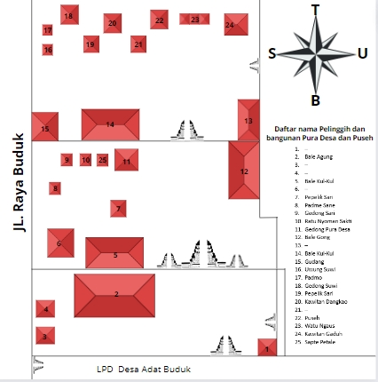

Pura Desa lan Puseh
Deskripsi Pura Desa lan Puseh
Pura Desa lan Puseh Desa Adat Buduk terletak di Jalan Raya Buduk, Buduk, Kecamatan Mengwi, Kabupaten Badung, Bali. Pura Desa lan Puseh Desa Adat terbentuk karena Kerobokan melakukan renovasi pada tahun 2018 dan diresmikan kembali pada tahun 2019. Piodalan jatuh pada Pemacekan Agung, Soma Kliwon, Wuku Kuningan. Di dalam pura ini diperoleh 6 artefak, 13 pelinggih, 2 gedong, 2 papelik, dan 4 bale. Di Pura Desa Lan Puseh Desa Adat Kerobokan terdiri dari 52 Banjar yang terdiri dari Kelurahan Kerobokan, Kelurahan Kerobokan Kaja, Kelurahan Kerobokan Kelod, Kelurahan Seminyak, Desa Padang Sambian Kaja, Desa Padang Sambian Kelod. Di Desa Adat Kerobokan terdapat 1 Pura Desa Lan Puseh dan 8 Pura Dalem
Denah pura Desa lan Puseh

Pelinggih Pura Desa lan Puseh
objek 1
objek 2
objek 3
objek 4
objek 5
objek 6
objek 7
objek 8
objek 9
objek 10
objek 11
objek 12
objek 13
objek 14
Foto
.jpg)
.jpg)
.jpg)
.jpg)
.jpg)
.jpg)
.jpg)


Nama
Gedong Sari
Patmesane
Sapte Petale
Gedong Pura Desa
Pelik Sari
Ratu Nyoman Sakti
Kawitan Dangkao
Puseh
Watu Ngaus
Kawitan Gaduh
Gedong Suwi
Uwung Suwi
Papelik Sari
Patmo
Deskripsi Singkat
Pelinggih ini digunakan untuk sembayang keselamatan, selain itu pelinggih ini dipenuhi ukiran ukiran.
Pelinggih ini digunakan untuk menyembah dewa Bhramana sebagai dewa pencipta.
Pelinggih ini digunakan untuk pemujaan kepada Hyang Widhi sebagai pencipta dan penguasa bumi.
Merupakan salah satu pelinggih terbesar dari pura desa lan puseh. Hampir keseluruhan bagian pelinggih dilapisi cat.
Pelinggih ini dibuat dengan menggunakan batu hitam, selian itu pelinggih ini memiliki sedikit ukiran.
Pelinggih ini dipercayai menangkal energi negatif. pada bagian atas pelinggih terdapat ukiran yang menggambarkan seorang pendana.
Pelinggih ini dibuat menggunakan batu merah, selain itu pelinggih ini memiliki ukiran yang simpel.
Merupakan Pelinggih tertinggi dari pura desa lan puseh, pelinggih ini memiliki 9 tingkatan. Pelinggih ini berfungsi untuk memuja dewa Wisnu sebagai dewa pemelihara.
Berfungsi sebagai tempat berdoa kepada leluhur yang suci.
Berfungsi untuk mendoakan leluhur suci anggota keluarga.
Pelinggih ini memiliki bentuk fisik yang serupa dengan Kawitan Dangkao, akan tetapi pelinggih ini memiliki hiasan yang lebih banyak.
Bangunan ini digunakan untuk penyajian perlengkapan upacara di saat upacara.
Salah satu pelinggih yang digunakan untuk memuja dewa Wisnu.
Panjang
252 cm
293 cm
217 cm
800 cm
286 cm
275 cm
587 cm
413 cm
320 cm
565 cm
592 cm
220 cm
153 cm
230 cm
Lebar
173 cm
256 cm
112 cm
460 cm
350 cm
186 cm
370 cm
615 cm
495 cm
343 cm
340 cm
200 cm
126 cm
142 cm
tinggi
400 cm
400 cm
300 cm
700 cm
400 cm
350 cm
700 cm
1000 cm
300 cm
700 cm
650 cm
350 cm
350 cm
300 cm